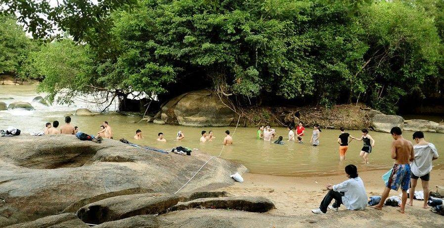
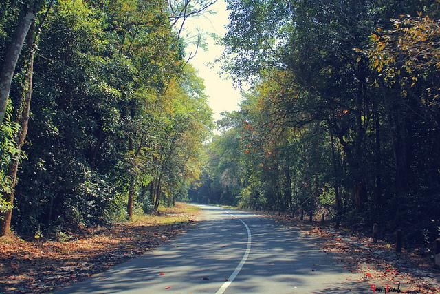
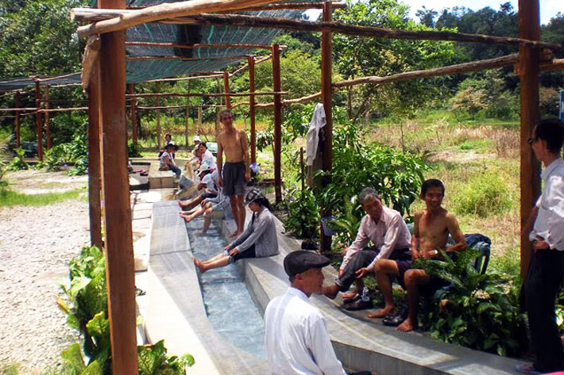

Dù bạn là dân “phượt” chính hiệu, hay đơn giản là người yêu thích và mong muốn đặt chân đến những vùng đất mới, chiêm ngưỡng các tuyệt tác của “mẹ thiên nhiên”, thì cũng đừng nên bỏ qua chuyến hành trình khám phá Rừng Thác Mai – Bàu Nước Sôi lần này. Cảnh quan kỳ vĩ, nguyên sơ, chưa hề có sự tác động của con người cùng với hệ sinh thái phong phú nơi đây chắc chắn sẽ mang đến cho bạn những trải nghiệm vô cùng thú vị.
vị trí của thác mai
Thác Mai cách Sài Gòn tầm 150 km. Từ TP.HCM chạy theo hướng về Biên hòa, đi qua ngã 3 Vũng Tàu tới Dầu Dây rồi rẽ trái theo quốc lộ 20 về Định Quán – Đồng Nai. Theo chia sẻ của anh Conan 2001 thì các bạn đi đến Km số 120 , qua sông La Ngà khảng 7 – 9 Km ( lưu ý là cột KM này nhìn phía bên tay trái đường hướng từ Biền Hoà lên Định Quán . Nếu là cột KM bên tay phải thì là cột thứ 39 hay 40 thì phải, nếu các bạn theo các hướng khác mà không chú ý kĩ thì dễ bị lạc 1 khoảng cách khá xa. Bắt đầu vào địa phận huyện Định Quán ( sẽ có 1 cái bảng to ghi chữ Định Quán màu xanh, phía bên tay phải) bạn sẽ thấy 1 con đường nhựa chạy vào trong, đường rất mát và đẹp, chạy khoảng 5Km bạn sẽ gặp 1 nhánh rẽ ko phủ nhựa. Nếu đi thẳng thì bạn sẽ vào khu người dân tộc, còn rẽ trái theo đường nhựa là đi tiếp tới thác Mai. Từ quốc lộ 20 chạy vào tới Thác Mai, bạn phải đi 23Km đường xuyên rừng ( khoảng 8 – 9 Km là đường nhựa, còn lại là đường đất). Chạy tầm 10km nữa sẽ tới nơi. 
suối nước nóng
Rời Thác Mai, bạn sẽ được khám phá Bàu Nước Sôi cũng nằm trong khu vực hệ sinh thái Thác Mai – là hồ nước nóng tự nhiên với diện tích rộng 7ha. Tại đây, bạn sẽ được thỏa thích ngâm chân dưới dòng nước khoáng nóng 36 độ C, đắm mình trong làn nước ấm trong hồ khoáng, tắm bùn thiên nhiên… Đó sẽ không chỉ là những trải nghiệm thú vị mà còn mang đến cho bạn những lợi ích tuyệt vời cho sức khỏe như: làm mịn da, giảm các bệnh về hệ thần kinh, ngoài da, phong thấp, đổ mồ hôi tay… Đáy bàu là những hạt cát màu xám, khi đặt chân lên bạn sẽ có cảm giác êm ái như được massage chân.
Lợi ích của việc đi du lịch Sinh Thái
Những lợi ích từ du lịch sinh thái Du lịch sinh thái là gì? Khái niệm về du lịch sinh thái xuất hiện từ nâm 1991 Du lịch sinh thái là loại hình du lịch diễn ra trong các vùng có hệ sinh thái tự nhiên còn bảo tồn khá tốt nhằm mục tiêu nghiên cứu, chiêm ngưỡng, thưởng thức phong cảnh, động thực vật cũng như các giá trị văn hoá hiện hữu.
Cần chuẩn bị gì cho chuyến đi
Một khi lựa chọn du lịch sinh thái - dù là đi tour hay tự túc, điểm đến phổ biến hay hoang sơ, thì khả năng sai sót, nguy hiểm vẫn có thể xảy đến bất kỳ lúc nào. Dưới đây là những nhóm đồ cần thiết để gia đình có một chuyến đi an toàn và trọn vẹn.